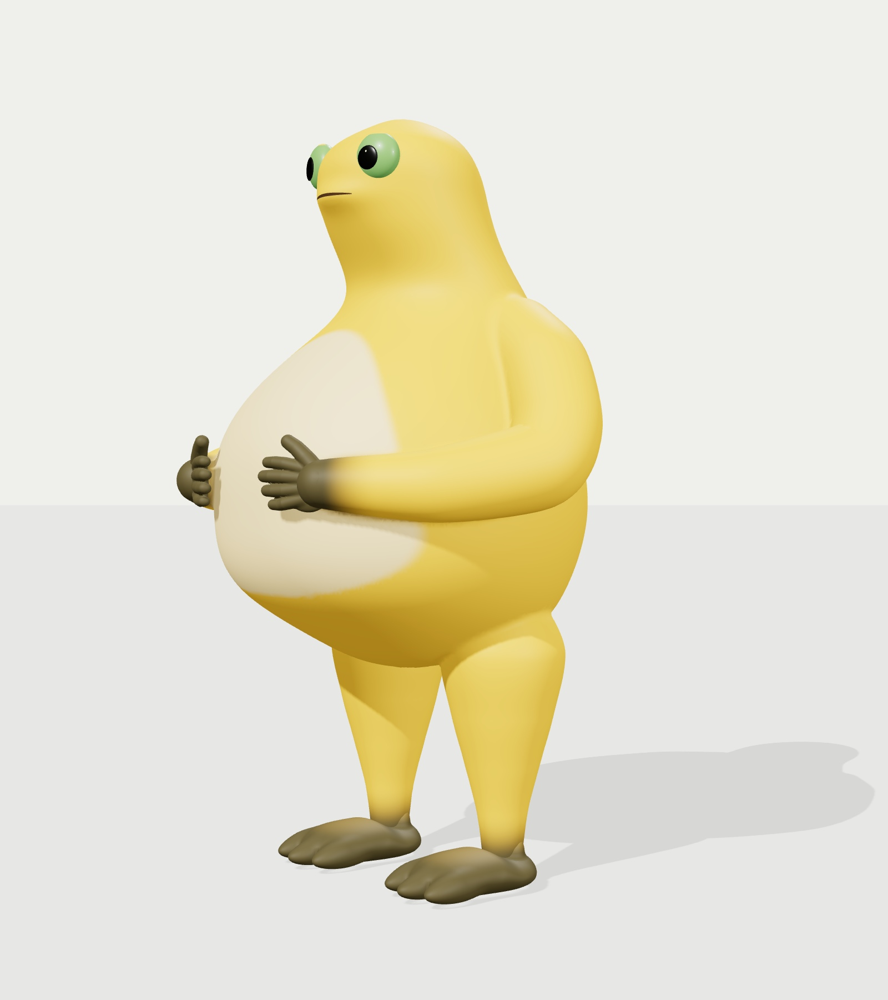
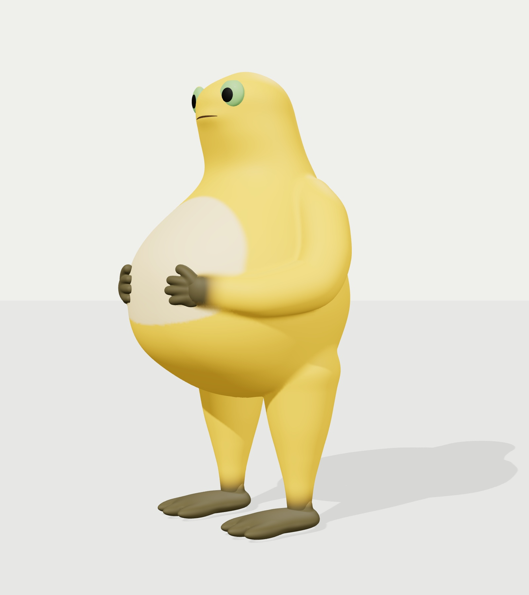

VESPER / CHARACTER STUDY
奶龙 · 形体对照
在相同机位与白光下，查看本次调整前后的轮廓、托肚姿态与局部细节。切换灰模可单独检查形体。


修改前 · 左侧最终模型 · 右侧
左右拖动分界线；键盘可用左右方向键调整。
四分之三使用独立透视机位，与参考的观察角度接近；前后机位和白光固定。
图片按原比例完整显示。并排模式可点图查看原尺寸。
四分之三视角，材质，并排对照。
- 角色与动画接口
- 2 m · 15 骨骼 Idle / Walk 保持兼容
- 肘部横向位置
- 0.560 → 0.505 m 上臂与肘部更靠近身体
- 腹部色块高度
- 0.670 → 0.540 m 腹斑下方保留黄色留边
- 脚掌长度
- 约增加 11% 脚背降低，前足向前延伸